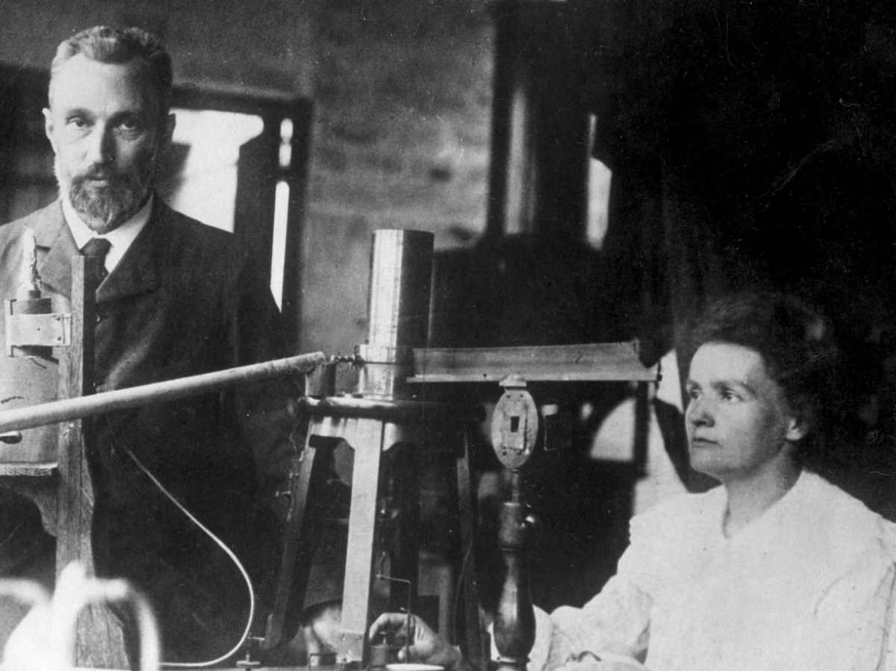

Một người vợ trẻ trông nom nhà cửa, tắm rửa con gái bé, đặt nồi, xoong lên bếp… và trong phòng thí nghiệm nghèo nàn của Trường Vật Lý, một nữ bác học hoàn thành phát minh quan trọng nhất trong khoa học hiện đại.
Hai bằng cử nhân, một bằng thạc sĩ, một công trình nghiên cứu về “từ tính của những loại thép đã tôi”. Đó là thống kê hoạt động của Marie, tính đến cuối năm 1897, khi bà quay lại làm việc sau thời gian nghỉ đẻ.
Giờ đây, bước tiến triển lô-gích trong sự nghiệp của Marie là chuẩn bị thi tiến sĩ. Sau một vài tuần lễ cân nhắc, nhà nữ bác học thấy cần chọn một đề tài nghiên cứu có một nội dung đặc biệt phong phú để làm luận án. Với mục đích đó, Marie đã xem lại một lượt các công trình nghiên cứu mới về vật lý.
Trong việc chọn lựa này, ý kiến của Pierre rất quan trọng, Pierre là trưởng phòng thí nghiệm, “thủ trưởng” của Marie, lại là một nhà vật lý lâu năm, có nhiều kinh nghiệm hơn. Bên cạnh Pierre, Marie cảm thấy mình như còn đang học việc.
Song, phải nói đến vai trò cá tính và bản chất sâu xa của cô gái Ba Lan trong việc quyết định về vấn đề nghiên cứu này. Từ bé, Marie đã mang trong lòng ham muốn hiểu biết và dũng cảm của những nhà thám hiểm. Chính bản năng ấy thôi thúc mà cô xa rời Varsovie để đến Paris và trường Sorbonne, và cũng vì say mê học hỏi mà cô ưa các gian phòng tĩnh mịch ở xóm La-tinh (Latin) hơn căn nhà ấm cúm của anh chị Du-xki (Dłuski). Mỗi lần đi chơi thăm rừng, cô thường tìm con đường nào ít dấu chân nhất, hoang dại nhất.
Giờ đây, Marie giống như một nhà du hành đang nghĩ đến một chuyến đi trọng đại. Người đó cúi xuống bản đồ, phát hiện giữa một vùng xa xăm một tên gọi lạ tai, làm trí tưởng tượng của mình bị kích thích, và bất giác, quyết định chỉ đi đến chỗ ấy chứ không đi đâu khác. Đọc lại những bản báo cáo về kết quả nghiên cứu thể nghiệm mới nhất, Marie dừng lại ở công trình của nhà vật lý học Hăng-ri Bếch-cơ-ren (Henri Becquerel) đăng năm ngoái. Pierre và Marie đã xem qua một lần rồi. Nhưng nay Marie đọc kĩ hơn, nghiên cứu thêm với sự cẩn thận quen thuộc của mình.
Sau khi Rơn-gân[35] tìm ra tia X, Hăng-ri Poăng-ca-rê nảy ra ý nghĩ nghiên cứu về các chất huỳnh quang, xem dưới tác động của ánh sáng, chúng có phát ra những tia giống như tia X không. Cùng một ý kiến ấy, Bếch-cơ-ren (Becquerel )[36] đã nghiên cứu muối của một kim loại hiếm: Đó là U-ra-ni (L'uranium). Nhưng Becquerel lại tìm ra một hiện tượng khác khó hiểu: các muối u-ra-ni không cần tác động của ánh sáng, vẫn tỏa ra những quang tuyến có tính chất mới lạ. Một chất muối u-ra-ni đặt trên một tấm kính ảnh bọc trong giấy đen, đã tác động vào thuốc ảnh, qua tấm giấy. Giống như quang tuyến X, những tia u-ra-ni cũng khiến một máy điện nghiệm phóng điện, do không khí chung quanh hoá thành dẫn điện.
Becquerel đã thể nghiệm và đi đến kết luận rằng những đặc tính ấy không tuỳ thuộc vào một nguồn ánh sáng tiếp nhận từ trước, mà vẫn tồn tại khi muốn u-ra-ni đã bị giữ rất lâu trong bóng tối. Song Becquerel chỉ mới khám phá ra hiện tượng mà sau này Marie Curie gọi là tính phóng xạ. Nguyên nhân của sự phát quang ấy hiện còn bí ẩn. Muối U-ra-ni phát quang, nghĩa là phát ra năng lượng, dù là rất ít. Vậy năng lượng ấy ở đâu mà ra? Tính chất các quang tuyến này ra sao? Đây là một đề tài nghiên cứu lý thú, một luận án thi tiến sĩ. Vấn đề rất hấp dẫn đối với Marie, nhất là phạm vi nghiên cứu hãy còn trắng, những công trình của Becquerel còn mới mẻ, và trong các phòng thí nghiệm Châu Âu, theo như bà biết, chưa ai đi sâu vào U-ra-ni.
Cho đến lúc này, điểm khởi đầu và thư mục duy nhất là những thông báo của Henri Becquerel, trước viện Hàn lâm khoa học năm 1896.
Đi vào khám phá một lĩnh vực chưa hề ai đặt chân tới thật say sưa hào hứng biết bao!
Chỉ còn tìm một chỗ cho Marie làm các thí nghiệm. Khó khăn bắt đầu từ đây. Pierre mấy lần khẩn khoản với ông hiệu trưởng trường vật lý, nhưng chỉ được một kết quả rất nhỏ: nhà trường để cho Marie sử dụng một cái buồng kho ở tầng dưới, có tường lắp kính. Đó là một không gian bề bộn, ám khói vừa là kho chứa hàng, vừa để đặt máy, trang bị kĩ thuật thô sơ, tiện nghi không có.
Thiếu trang bị điện thích hợp và thiếu mọi thiết bị khởi đầu trong nghiên cứu khoa học, Marie không nản lòng vẫn tìm cách cho chạy máy móc, dụng cụ trong gian phòng chật hẹp.
Nào có dễ đâu. Ẩm ướt và thời tiết thay đổi là kẻ thù nham hiểm của các dụng cụ chính xác. Trong phòng máy nhỏ hẹp này, thời tiết rất hại đối với những điện nghiệm kế nhạy bén, mà cũng chẳng tốt gì cho sức khoẻ của Marie. Song có hề chi! Những lúc lạnh quá, Marie đều ghi vào sổ tay nhiệt độ do hàn thử biểu chỉ. Ngày 6 tháng hai 1898, giữa những con số và những công thức, có ghi “Nhiệt độ ống tròn 6025”. Tiếp theo là mười chấm than! Sáu độ, rét thật.
Trước tiên, cần phải đo cho được khả năng “I-ôn hoá” của tia u-ra-ni, nghĩa là khả năng làm cho không khí trở thành dẫn điện, khiến một máy điện nghiệm xả điện.
Phương pháp rất hay mà Marie áp dụng – nó sẽ là chìa khoá thành công trong các thí nghiệm của bà – trước đây đã do Pierre và Jacques tìm ra trong khi nghiên cứu các hiện tượng khác. Dụng cụ gồm một “phòng i-ôn hoá”, một điện kế Curie và một bàn thạch anh áp điện.
Nhận xét đầu tiên của Marie rút được sau một vài tuần là: cường độ phát quang tỉ lệ thuận với lượng u-ra-ni có trong những mẫu nghiên cứu và sự phát quang ấy có thể được chính xác, không phụ thuộc vào trạnh thái hoá học của U-ra-ni hoặc điều kiện bên ngoài như ánh sáng, nhiệt độ v.v…
Điều đó đối với người thường, tưởng như không có gì quan trọng, nhưng trước con mắt nhà bác học lại vô cùng hấp dẫn. Đã bao phen, trong vật lý, có hiện tượng không giải thích được, sau một hồi nghiên cứu ngắn, lại có thể ghép vào những định luật đã biết trước kia rồi và do đó, chẳng còn lí thú gì đối với người tìm tòi nữa. Có thể ví như trong những truyện trinh thám viết dở, nếu mới đến chương ba tác giả đã cho biết rằng con người dáng điệu lạ lùng kia, cứ nghĩ là thủ phạm vụ ám sát nọ, chẳng qua chỉ là một người đàn bà bình thường mà cuộc sống chẳng có gì bí mật, thì câu chuyện hoá nhạt và chúng ta không muốn đọc nữa.
Đằng này khác. Càng đi sâu tìm hiểu quang tuyến u-ra-ni, Ma-ri càng thấy rằng đây là những tia rất lạ. Chúng không giống hiện tượng nào cả. Chúng không hề bị cái gì tác động đến và mặc dù rất yếu ớt, chúng có một “đặc cách” phi thường.
Tâm trí Marie cứ lật đi lật lại điều bí ẩn này. Nhà bác học linh cảm là chẳng bao lâu, có thể khẳng định rằng sự phát quang khó hiểu đó là một đặc tính nguyên tử. Bà nghĩ hiện tượng này mới chỉ bắt gặp ở chất u-ra-ni, song không có nghĩa rằng u-ra-ni là nguyên tố hoá học duy nhất có thể gây ra hiện tượng ấy. Biết đâu các chất khác cũng có khả năng này? Có thể những tia mới đó do ngẫu nhiên được tìm thấy ở u-ra-ni, mà rồi trong trí óc các nhà vật lý, chúng cứ gắn liền với u-ra-ni. Phải thử tìm những tia ấy ở chỗ khác.
Nghĩ là làm! Marie thôi không nghiên cứu chất u-ra-ni nữa mà soát lại một lượt tất cả các chất hoá học đã biết. Kết quả là các hợp chất của một nguyên tố khác là tho-ri cũng phát quang với một cường độ không lớn. Nhà nữ bác học trẻ đã nhìn sáng suốt, hiện tượng này không là một đặc tình của u-ra-ni, cần phải cho nó một tên gọi riêng. Bà Curie đề nghị gọi là sự phóng xạ. Các chất như u-ra-ni và tho-ri ( L'uranium, và Thorium,) có khả năng “tỏa quang” đặc biệt, là những chất phóng xạ.
Hiện tượng phóng xạ làm cho nhà vật lý băn khoăn suy nghĩ nhiều. Bà tiếp tục nghiên cứu nhiều chất khác nhau bằng cùng một phương pháp. Không chỉ giới hạn phạm vi tìm tòi vào những hợp chất đơn giản là muối và o-xýt (, Marie bỗng nảy ra ý soát lại toàn bộ mẫu quặng có ở trường Vật lý, đem thử hết lượt qua điện nghiệm kế, ví như một cuộc khám xét thuế quan. Thử cầu may, không được gì cũng là giải trí. Pierre cũng nghĩ như vậy và cùng Marie chọn những mẫu quặng có gân, cứng hoặc dễ vụn, hình dáng kì quặc, mà Marie có ý định khảo sát.
Ý nghĩ của Marie thật đơn giản – đơn giản như mọi khám phá thiên tài. Bà Curie đã đến một chặng đường mà có lẽ nhiều người tìm tòi khác sẽ ngừng lại hàng tháng, thậm chí hàng năm. Sau khi soát lại tất cả các chất hoá học đã biết và tìm ra được sự phát quang của tho-ri (Thorium), như Marie đã làm, có thể họ sẽ tiếp tục tự hỏi và không trả lời được vì sao có sự phóng xạ huyền bí đó. Marie cũng tự hỏi và ngạc nhiên. Song ngạc nhiên này diễn ra bằng những hành động có hiệu quả. Mọi khả năng hiển nhiên đã được tận dụng, Marie quay ra cái chưa dò đến, cái còn bí ẩn.
Bà biết trước sự khảo sát các quặng sẽ cho thấy cái gì. Nói cho đúng, mới tưởng là biết. Loại quặng nào không có chất u-ra-ni hoặc tho-ri, sẽ tỏ ra hoàn toàn “không có thuộc tính”. Còn các loại khác có u-ra-ni hoặc tho-ri ( L'uranium, và thorium,)) thì phóng xạ.
Thực tế đã chứng minh những dự đoán ấy. Bỏ qua những quặng không có thuộc tính, Ma-ri bám sát những quặng khác và đo độ phóng xạ của chúng. Ở đây, có điều rất lạ. Sự phóng xạ ấy mạnh hơn rất nhiều so với mức phóng xạ mà người ta có thể dự đoán thông thường, căn cứ vào lượng u-ra-ni và tho-ri có trong các chất được khảo sát!
“ Có thể là một lầm lẫn trong thực nghiệm”.
Marie nghĩ như vậy. Vì trước một hiện tượng bất ngờ, phản ứng đầu tiên của nhà bác học là hoài nghi.
Marie bình tĩnh làm lại các đo lường, với cùng những chất đang nghiên cứu. Mười lần, rồi hai mươi lần. Sự thật vẫn hiển nhiên, lượng u-ra-ni và tho-ri có trong quặng không đủ để chứng minh cường độ đặc biệt của hiện tượng tỏa quang đang theo dõi.
Độ phóng xạ quá mức và khác thường ấy do đâu? Chỉ có thể giải thích như sau: các quặng chứa đựng một lượng rất nhỏ một chất có khả năng phóng xạ mạnh hơn u-ra-ni và tho-ri rất nhiều.
Song chất đó là gì? Trong các cuộc thí nghiệm trước, Marie đã khảo sát tất cả các chất hoá học khác đã biết.
Nhà nữ bác học trả lời câu hỏi ở trên với sự vững vàng và táo bạo tuyệt vời của những thiên tài. Bà mạnh dạn nêu lên giả thuyết: các quặng ắt phải chứa đựng một chất phóng xạ đồng thời cũng là một nguyên tố hoá học cho đến nay chưa biết – một chất mới lạ!
Một chất mới lạ! Giả thuyết này thật hấp dẫn, quyến rũ, nhưng vẫn mới là giả thuyết. Cho đến lúc này, các chất phóng xạ cực mạnh ấy chỉ tồn tại trong trí tưởng tượng của Pierre và Marie. Nhưng nhất định phải có! Một hôm, Marie cố nén xúc động, nói với Bronia:
- Chị có biết không, một hiện tượng tỏa quang mà em không giải thích nổi, chính là do một nguyên tố hoá học chưa ai biết. Nguyên tố ấy đây rồi! Chỉ còn tìm ra nó, Pierre và em tin chắc là có. Em nói chuyện với nhiều nhà vật lý thì họ ngờ là nhầm lẫn trong thực nghiệm và khuyên chúng em nên cẩn trọng. Song em nhất quyết là không nhầm.
Những giây phút không gì sánh tày của một cuộc sống duy nhất. Tâm lý thông thường vẫn hay mang một khái niệm lãng mạn hoàn toàn sai lệch về người tìm tòi và sự khám phá ra cái mới. Không phải bao giờ cũng có cái “giây phút phát hiện”. Công việc của nhà bác học vốn phức tạp, tinh tế, và trong quá trình nghiên cứu gian khổ, sự thành công không hề loé ra như một tia chớp làm choáng mắt. Đứng trước các dụng cụ của mình, Ma-ri có lẽ không biết đến cái say sưa đột ngột của thành công, vì niềm vui khám phá thật ra đã tiềm tàng, tản mạn trong bao ngày làm việc có tính quyết định, những ngày chứa chan hy vọng tuyệt vời. Song, hồi hộp biết bao, cái giây phút mà Marie thổ lộ bí mật của mình cho người chị ruột và đồng minh thân thuộc, sau khi đã vận dụng một lý luận chặt chẽ để kiểm tra lại và khẳng định được rằng mình đang theo dõi một chất mới lạ. Hai chị em xúc động không nói nên lời, để tâm hồn say sưa hồi tưởng lại những năm tháng đợi chờ, lần lượt hy sinh cho nhau và cuộc đời sinh viên khắc khổ nhưng tràn đầy tin tưởng và mơ mộng.
Mới cách đây bốn năm, Marie viết:
“Cuộc sống chẳng có vẻ dễ dàng đối với mỗi chúng ta. Nhưng dù sao, phải kiên trì, nhất là phải tin ở mình chứ? Phải tin rằng ta có nhiều về một mặt nào đó và quyết đạt tới cho bằng được”.
Cái “khiếu” ấy là đẩy khoa học vào một con đường không ngờ tới.
Trong thông báo gửi Viện hàn lâm khoa học đăng trên Bản tin khoa học ngày 12 tháng 4 năm 1898, Marie Curie báo tin trong quặng Pếch-blen có thể có một chất mới có tính phóng xạ mãnh liệt.
Thông báo có câu:
“Hai quặng u-ra-ni là pêch-blen (ô-xít u-ra-ni) có hoạt tính mạnh hơn bản thân u-ra-ni rất nhiều. Hiện tượng này rất đáng chú ý vá cho ta tin tưởng rằng các quặng ấy có thể chứa đựng một chất có hoạt tính hơn u-ra-ni nhiều”.
Đó là giai đoạn đầu của sự khám phá ra chất ra-đi.

.Do nhạy cảm, Marie đã chứng minh cho mình rằng chất ấy nhất định phải có. Bà khẳng định như vậy. Bây giờ chỉ còn truy lùng chất ấy mà thôi. Bây giờ phải lấy thực nghiệm kiểm tra giả thuyết, cố tách riêng cái chất ấy ra. Tuy không tham dự trực tiếp vào việc này, Pierre thường xuyên nhận xét, góp ý giúp đỡ Marie.
Trước kết quả đặc biệt bất ngờ, Pierre quyết định tạm ngừng công trình nghiên cứu về tinh thể mà anh đang làm, để dốc sức cùng Marie tìm nguyên tố mới.
Thế là khi một việc trọng đại cấp thiết đòi hỏi một sự cộng tác thì một nhà vật lý lớn đã có mặt bên cạnh một nhà vật lý. Đó là Pierre, người bạn đời của Marie.
Ba năm trước đây, tình yêu đã nối liền hai con người phi thường ấy. Tình yêu, và có lẽ một sự tiên tri diệu kì, một bản năng không thể lầm lẫn về tinh thần đồng đội.
Sức chiến đấu nay đã gấp đôi. Trong cái xưởng nhỏ ẩm ướt phố Lô-mông, hai khối óc, bốn bàn tay cùng tim tòi một nguyên tố mới. Từ nay, trong sự nghiệp chung của hai vợ chồng bác học Curie, không thể phân biệt đâu là phần của người này, đâu là phần của người kia. Chúng ta biết rằng Ma-ri, sau khi chọn nghiên cứu các quang tuyến của u-ra-ni làm đề tài luận án tiến sĩ, đã khám phá ra rằng nhiều chất khác cũng có tính phóng xạ. Rồi sau khi khảo sát nhiều loại quặng, Ma-ri đã có thể báo cáo sự có mặt của một nguyên tố hoá học mới phóng xạ rất mạnh và tầm quan trọng hàng đầu của phát hiện này đã thúc đẩy Pierre Curie tạm ngừng nghiên cứu về lĩnh vực khác để tìm cách tách chất đó ra. Từ tháng năm hay tháng sáu 1898 đó, bắt đầu sự cộng tác chặt chẽ trong tám năm giữa Pierre và Marie, chỉ chấm dứt một cách tàn bạo do một tai nạn chết người.
Trong suốt tám năm ấy, khó mà phân biệt được việc gì do Marie làm, việc gì do Pierre làm. Có lẽ hai vợ chồng bác học đều không nghĩ đến điều đó. Thiên tài của Pierre Curie đã được tỏ rõ qua những công trình đặc biệt của nhà vật lý trước đây. Còn thiên tài của Marie là linh cảm ngay từ giây phút đầu sự khám phá ấy, và khởi đầu một cách chớp nhoáng. Thiên tài ấy sau này được thể hiện một lần nữa khi bà quả phụ Curie trong cảnh cô đơn, vẫn dũng cảm đảm đương một khoa học mới và đưa dần khoa học này đến phát triển rạng rỡ, hài hòa. Đó chẳng phải là những chứng cớ hiển nhiên rằng trong quá trình phối hợp tuyệt diệu giữa một nam một nữ ấy, cuộc trao đổi là bình đẳng đó sao?
Như vậy kể cũng đủ thỏa mãn lòng chúng ta tha thiết muốn tìm hiểu và khâm phục. Hãy đừng tách rời hai con người tràn đầy tình yêu mà chữ viết cũng quyện lấy nhau trên những trang sổ ghi đầy công thức. Hai con người mà rồi đây sẽ cùng kí chung hầu hết những bản báo cáo khoa học của họ. Pierre và Marie thường viết: “Chúng tôi thấy rằng… chúng tôi nhận xét rằng…” Trường hợp bất đắc dĩ phải nói rõ vai trò từng người, hai nhà bác học sẽ dùng cách nói cảm động như sau:
“Nhiều quặng u-ra-ni và tho-ri (pêch-blen, can-cô-lit và u-ra-nit) rất có hoạt tính về phương diện phát ra tia bếch-cơ-ren. Trong một công trình trước đây, một trong hai chúng tôi đã chỉ rõ rằng hoạt tính của các quặng ấy còn mạnh hơn cả hoạt tính của u-ra-ni và tho-ri nữa, và đề xuất ý kiến rằng hiệu quả này có lẽ do một chất gì khác có hoạt tính chứa đựng trong những quặng đó với một lượng rất nhỏ”.
(Pierre và Marie Curie. Tường trình ngày 18 tháng 7 năm 1898).
Hai vợ chồng bác học Curie tìm cái “Chất rất có hoạt tính” trong một loại quặng u-ra-ni, đó là pêch-blen. Ở thể thô, quặng pêch-blen tỏ ra phóng xạ mạnh hơn bốn lần ô-xít U-ra-ni tinh khiết mà nó chứa đựng. Nhưng thành phần các chất có trong quặng ấy đã khá rõ. Vậy thì cái nguyên tố mới nằm trong quặng này phải ở một lượng rất nhỏ cho nên các nhà bác học mới không thấy, mặc dầu đã dùng những phương pháp phân tích tỉ mỉ và chính xác.
Pierre và Marie ước lượng rằng quặng phải chứa đựng không quá một phần trăm nguyên tố mới, và còn nghĩ rằng như thế đã quá ít rồi. Họ sẽ kinh ngạc biết bao nếu biết rằng chất phóng xạ bí mật ấy không có đến một phần triệu trong quặng pêch-blen.
Rất kiên nhẫn, hai nhà vật lý bắt tay khảo sát bằng một phương pháp tự đặt ra, dựa trên tính phóng xạ: dùng lối phân tích hóa học thông thường, tách riêng các chất có trong pêch-blen rồi đo độ phóng xạ của từng chất. Qua nhiều lần loại trừ, dần dần hiện tượng phóng xạ “dồn” hết vào những mảnh quặng nào đó. Công việc càng tiến thì phạm vi nghiên cứu càng thu hẹp. Đó chính là phương pháp mà Sở Công an hay dùng khi cần khám từng nhà trong một khu phố để truy lùng một kẻ phạm tội.
Song ở đây, không chỉ có phạm nhân: tính phóng xạ tập trung vào hai phần hóa học của pêch-blen. Đối với ông bà Curie, đó là dấu hiệu có hai chất mới khác nhau. Kể từ tháng 7 năm 1898, họ đã có thể công bố sự khám phá ra một trong hai chất này.
Pierre bảo người vợ trẻ:
- Em phải đặt tên cho “nó” đi!
Người thiếu phụ trước kia là cô Xkhua-đôp-xka trầm ngâm một lúc. Bất giác, trái tim Marie bay về Tổ quốc đã bị xoá tên trên bản đồ thế giới. Bà mơ màng suy nghĩ rằng sự kiện khoa học này sẽ được đăng báo ở nước Nga, nước Đức, nước Áo, những nước đang đàn áp Ba Lan. Rồi bà ngập ngừng đáp:
- Hay gọi nó là “Pô-lô-ni”? (Ponolium)
Bản tường trình tháng 7 năm 1898 có viết:
… “Chúng tôi nghĩ rằng cái chất mà chúng tôi chiết ra từ pêch-blen chứa đựng một kim loại mới chưa ai nói đến bao giờ, nó gần với bitx-mút do đặc tính phân tích của nó. Nếu sự có mặt của kim loại mới này được xác minh, chúng tôi đề nghị gọi nó là Pô-lô-ni, tên đất nước quê hương của một trong hai chúng tôi”.
Trước khi công bố trên thông báo của Viện hàn lâm khoa học Pháp việc khám phá ra một chất phóng xạ mới trong quặng pêch-blen, Marie đã gửi bản thảo về Tổ quốc của mình cho Dô-dếp Bô-gu-xki, phụ trách phòng thí nghiệm của Bảo tàng kĩ nghệ và Nông lâm, nơi khi xưa Marie đã từng làm thí nghiệm đầu tiên. Thông báo này được đăng ở Vác-xô-vi “Tạp chí Ánh sáng” (Swiatlo), đồng thời đăng ở Paris.
Trong ngôi nhà ở phố Nhà máy nước đá, cuộc sống không có gì thay đổi. Marie và Pierre làm việc hơn mọi lúc, thế thôi. Hè đến, nóng nực, Marie cố thu xếp thì giờ đi chợ mua hàng giỏ trái cây về và như thường lệ, đem nấu mứt để dành đến mùa đông, theo cách vẫn quen làm ở nhà Curie.
Sau đó Marie đóng các cửa sổ, đem hai xe đạp ra ga Ooc-lê-ăng (Orléans). Như trăm nghìn phụ nữ Paris khác, bà đi nghỉ hè với chồng và con.
Họ thuê một nhà nông dân ở làng O-ru (Oru) xứ O-vec (Auvergne). Không khí thôn quê trong lành dễ chịu biết bao so với khói và hơi độc ở phố Lô-mông! Pi-e và Ma-ri chơi rất nhiều nơi. Hết lên dốc lại xuống dốc, hết đi thăm ruộng lại đi tắm sông. Hằng ngày ở thôn quê, vẫn bàn đến “Những kim khí mới”, đến Pô-lô-ni, và các chất thứ hai đang cần phải tìm. Để đến tháng chín, lại về với cái kho ẩm thấp và những mảnh quặng xám xịt và tiếp tục tìm tòi, thí nghiệm với một niềm hăng say mới.
Một nỗi buồn làm giảm thú vui say mê với công việc của Ma-ri. Anh chị Dłuski sắp rời Paris, để trở về Ba Lan mở một an dưỡng đường cho người lao ở vùng núi Za-kô-pan. Hai chị em lưu luyến chia tay nhau, lòng buồn rười rượi. Marie mất một người bạn, một người đỡ đầu, và lần đầu tiên thấm thía sâu sắc cảnh tha hương.
Marie biên thư cho chị ngày 2 tháng 12 năm 1898:
“ Chị không thể tưởng tượng được sự trống trải mà chị để lại. Hai anh chị đi, em đã mất những gì em gắn bó nhất ở Paris ngoài chồng con ra. Giờ đây, Paris đối với em chỉ còn là cái nhà của chúng em và cái trường, nơi chúng em làm việc. Chị hỏi hộ em bà cụ Du-xka rằng cái cây xanh mà cụ để lại có phải tưới không, và mỗi ngày mấy lượt? Nó có cần ánh sáng mặt trời không?
Thời tiết độ này xấu, mưa và bùn, nhưng chúng em vẫn bình thường. Irène đã hơi lớn rồi. Cháu rất khảnh ăn, không như con người ta. Ngoài bột nấu với sữa, nó chẳng chịu ăn gì, kể cả trứng. Chị bảo trẻ em bằng tuổi ấy nên ăn những gì cho hợp”.
Vài trang sổ tay của Marie Curie trong năm 1898 đáng ghi nhớ ấy. Đọc nghe tầm thường nhưng có lẽ chính vì nó bình thường mà đáng kể ra đây.
Ghi ở lời quyển “Những món ăn thành thị”, ngay bên cạnh mục “mứt phúc bồn tử nấu đông”.
“Lấy bốn cân quả và bốn cân đường, đun sôi mười phút rồi lọc qua một cái rây khá mịn. Được mười bốn lọ nước quả khá đặc và đông ngay”.
Người mẹ trẻ ghi vào một quyển vở học sinh bọc vải xám, từng ngày, cân lạng của bé Irène, chế độ ăn, hôm nào mọc răng. Đến ngày 20 tháng 7 năm 1898 một tuần sau khi đăng báo việc khám phá ra chất Pô-lô-ni, trong quyển vở có ghi:
“ Irène đã biết ra hiệu bằng tay để tỏ ra là nó “cảm ơn”. Nó đã bò rất khoẻ. Nó nói “gô-ghi, gô-ghi, gô”. Cả ngày nó ở ngoài vườn ở Sceaux, trên một tấm thảm. Nó lăn, rồi trở dậy, rồi ngồi”.
Ngày 15 tháng 8:
“Irène mọc răng thứ bảy, hàm dưới, bên trái. Nó đứng một mình được đến nửa phút. Từ ba hôm hay, ngày nào cũng mang nó ra tắm sông. Lúc đầu, nó thét, nhưng hôm sau (lần thứ tư) nó quen, không kêu nữa, cứ vỗ lạnh bạch xuống nước.
Nó đùa với con mèo, đuổi mèo và tru tréo lên. Nó không sợ người lạ nữa. Nó hát suốt ngày. Cứ đặt ngồi trên ghế là nó trèo lên bàn”.
Hai tháng sau, ngày 17 tháng 10, Ma-ri ghi với một vẻ tự hào:
“Irène đi vững rồi, không bò nữa”
Ngày 5 tháng giêng năm 1899:
“Irène được 15 răng rồi”
Giữa hai câu ghi chép trên đây, nghĩa là khoảng thời gian từ 17-10-1898 đến 5-1-1899, có một đoạn ghi chép đáng chú ý. Đoạn này do Pierre và Marie cùng một người cộng tác nữa thảo gửi cho Viện hàn Lâm khoa học và đăng trong thông báo ngày 26 tháng 12 năm 1898, báo tin sự có mặt trong quặng pêch-blen một nguyên tố hoá học phóng xạ thứ hai.
Đây là trích một đoạn của thông báo đó:
“Những lý do mà chúng tôi vừa kể trên làm chúng tôi tin rằng chất phóng xạ mới chứa đựng một nguyên tố mới mà chúng tôi đề nghị đặt tên là Ra-đi.
Chất phóng xạ mới hẳn là chứa đựng một tỉ lệ nhỏ chất Ba-ri thế mà tính phóng xạ vẫn rất mạnh. Do đó, tính phóng xạ của Ra-đi hẳn rất lớn”.
Chú thích:
[35] Roentgen (1845 – 1923) nhà vật lý người Đức đã khám phá ra quang tuyến X (Giải Nobel 1901)
[36] Henri Becquerel (1852 -1908) nhà vật lý người Pháp đã tìm ra hiện tượng phóng xạ (Giải Nobel 1903)